Egg Drop playful care gallery
Actual Studio input and seeded fixtures are labeled. Studio phone emulation is not physical-phone evidence.
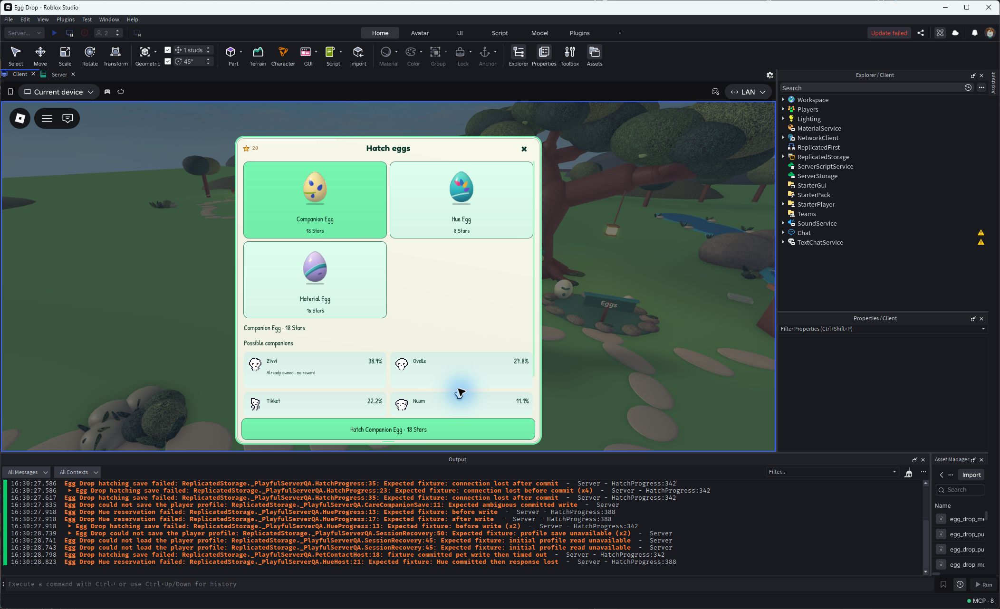
Actual earned Studio session: unified three-egg shop.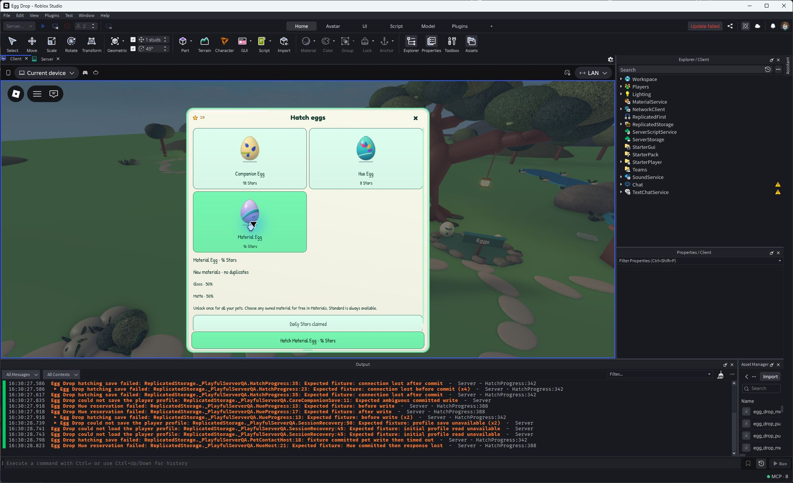
Actual shop:16 Stars, Gloss/Matte50/50.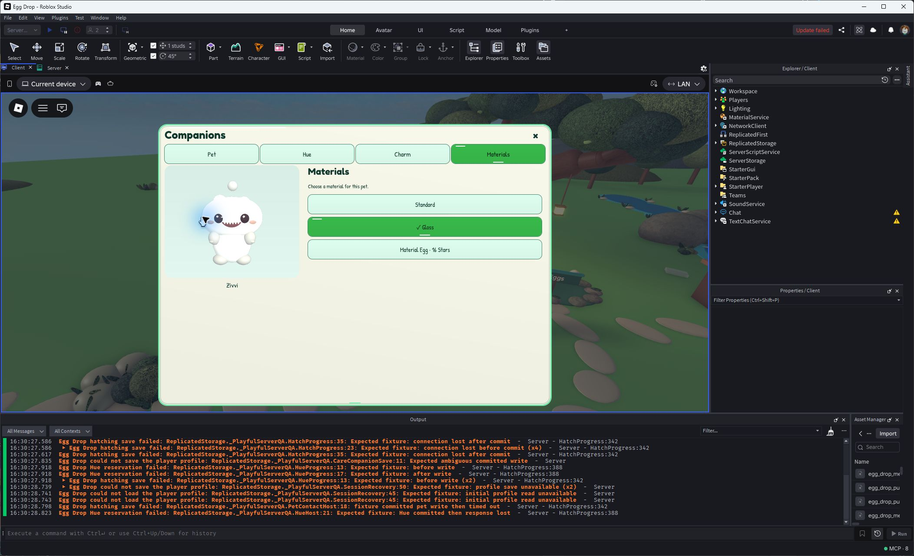
Actual earned Gloss selected for Zivvi. Receipt layout was tightened afterward.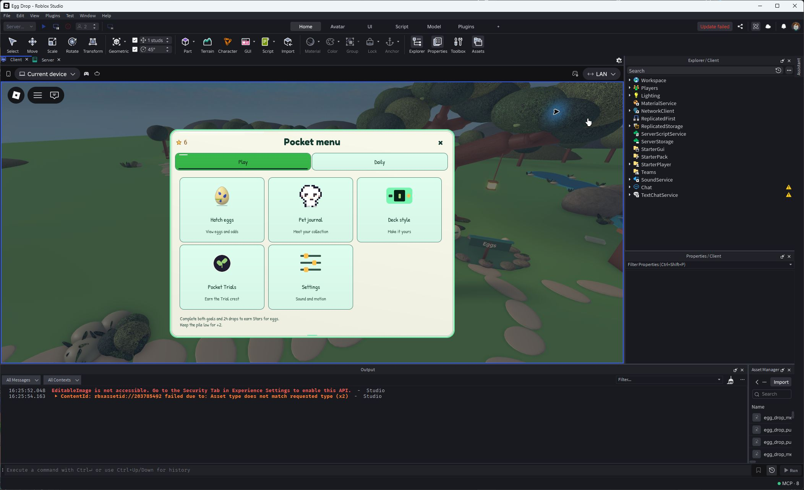
Actual menu supporting type.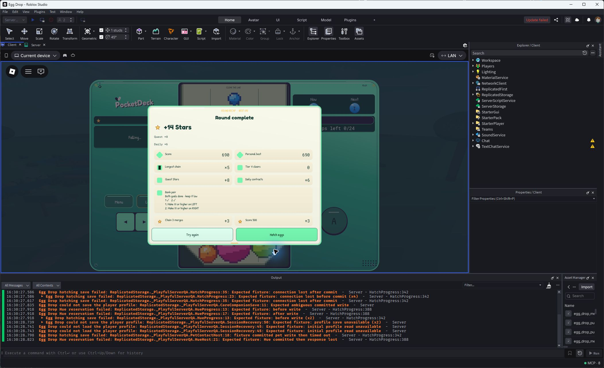
Actual24-drop Bank pair recap,14 earned Stars.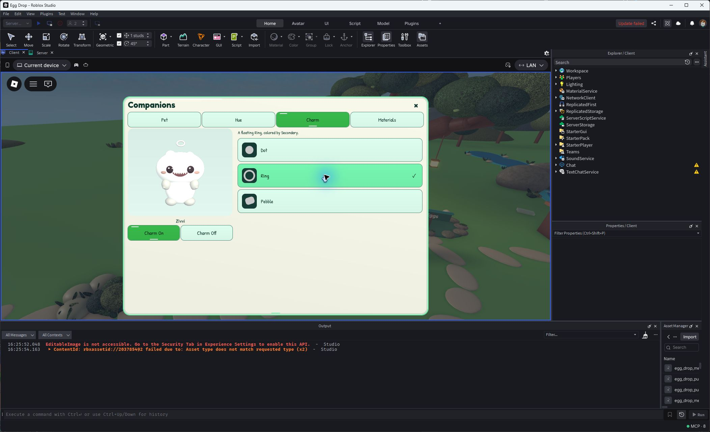
Actual Ring durable confirmation in117ms.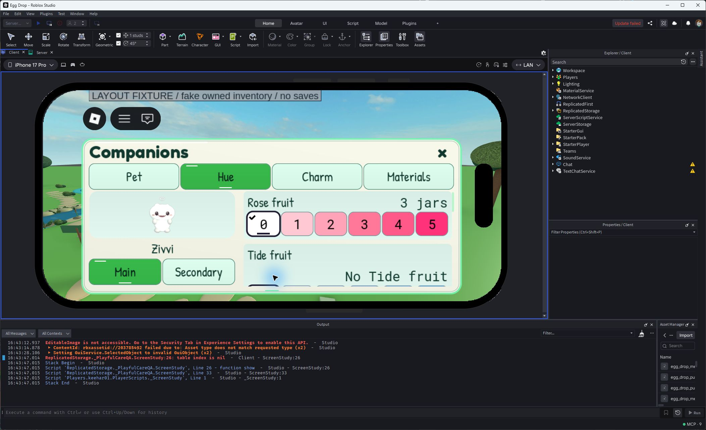
Final short landscape at Largest: seeded inventory, checked0–5, fixed portrait.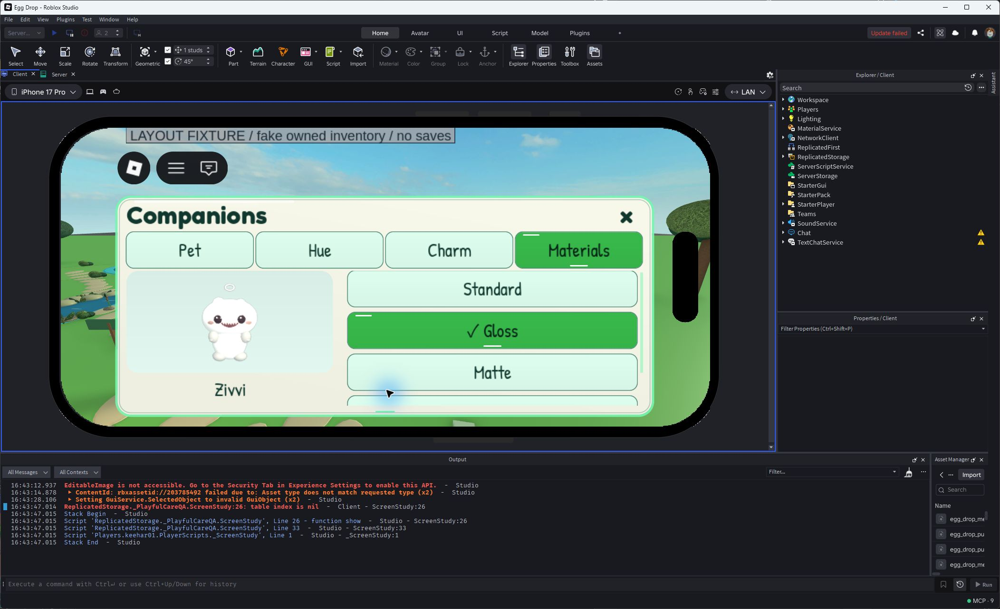
Final short landscape at Largest: seeded unlocked finishes.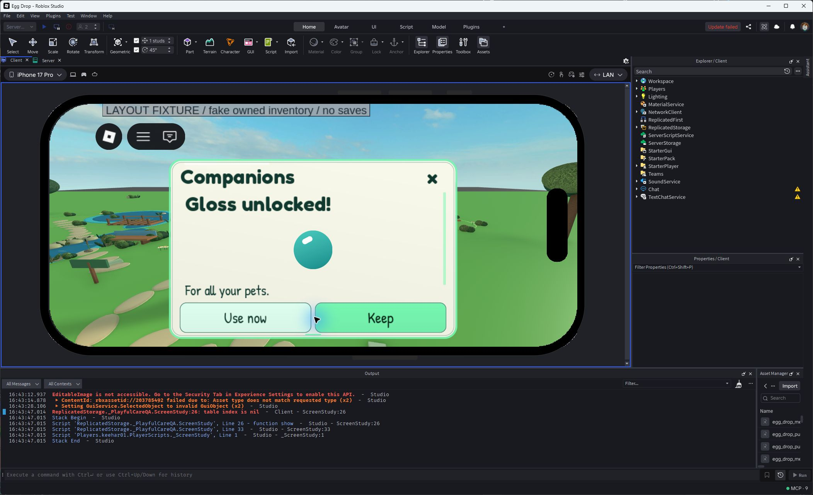
Final Material result at Largest: layout fixture, no purchase.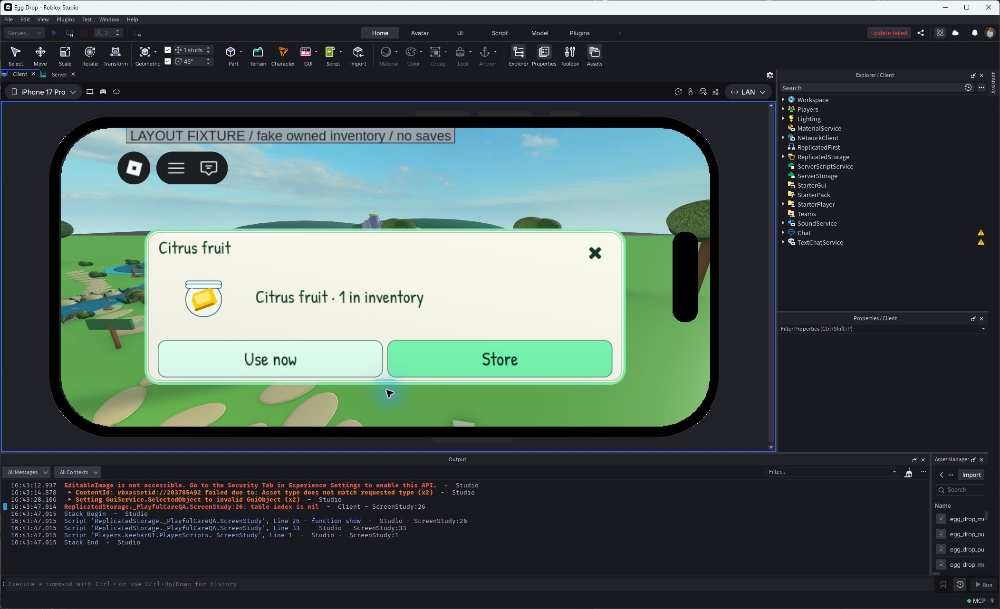
Final fruit result at Largest: layout fixture, no purchase.Final Reset result at Largest: layout fixture, no purchase.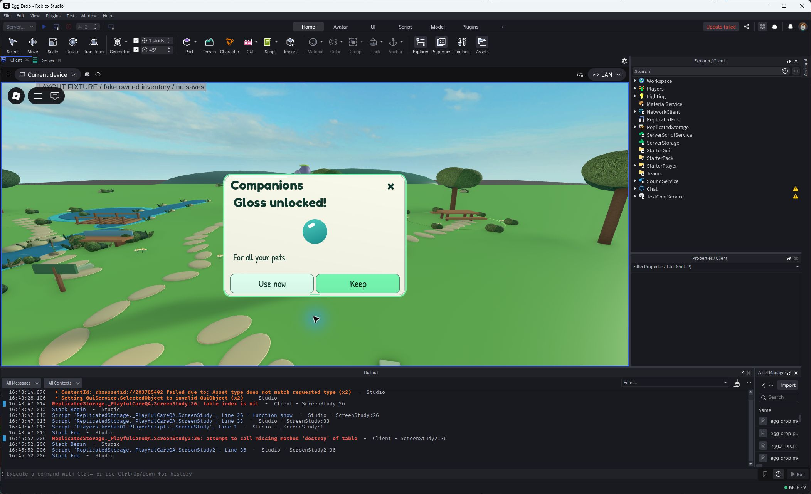
Final desktop compact Material result at Largest: layout fixture.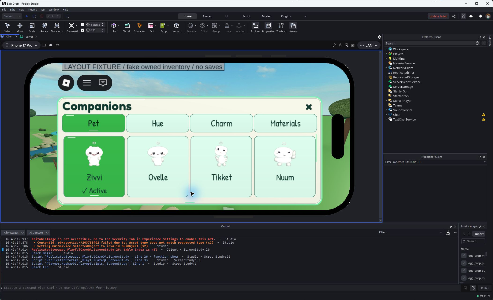
Seven-owned Pet grid, first row fully visible: layout fixture.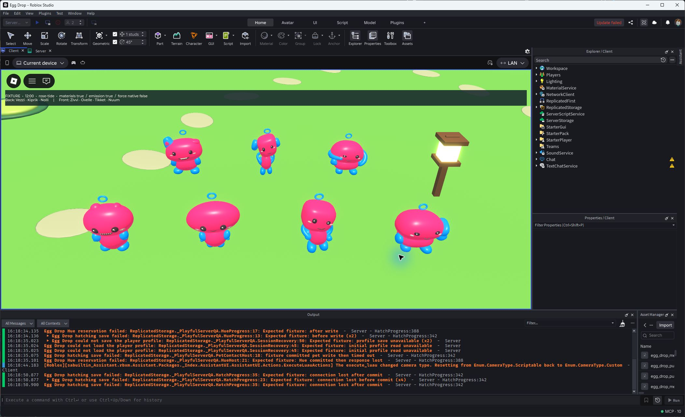
Native dyed daytime material fixture; accepted brighter coat.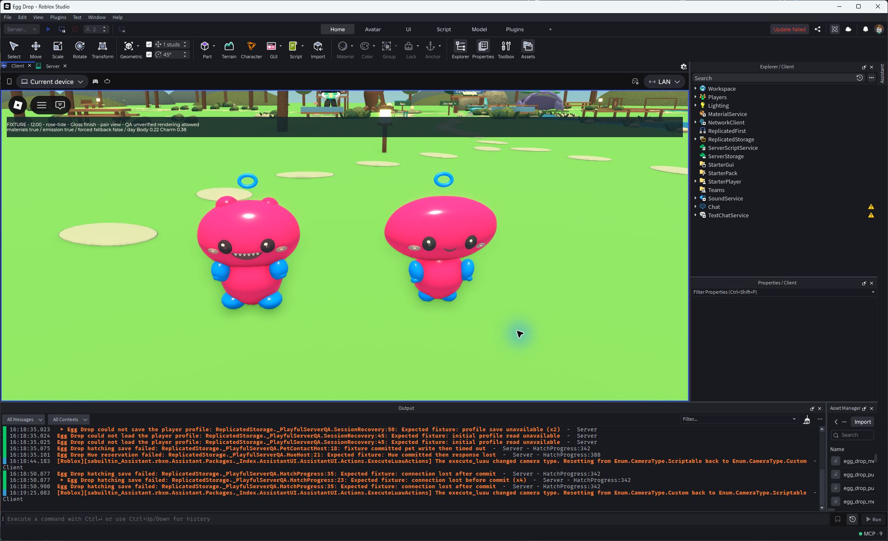
Native Gloss fixture at noon.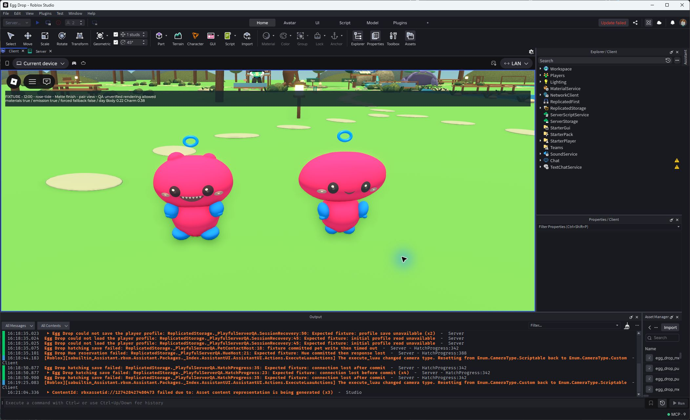
Native Matte fixture at noon.